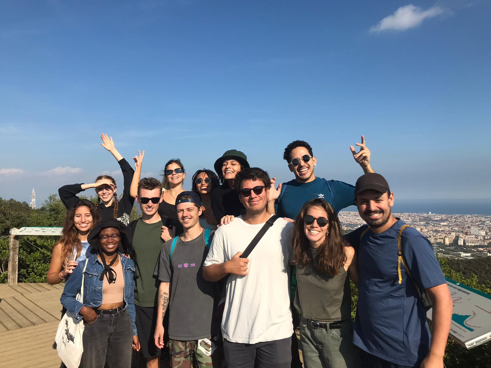
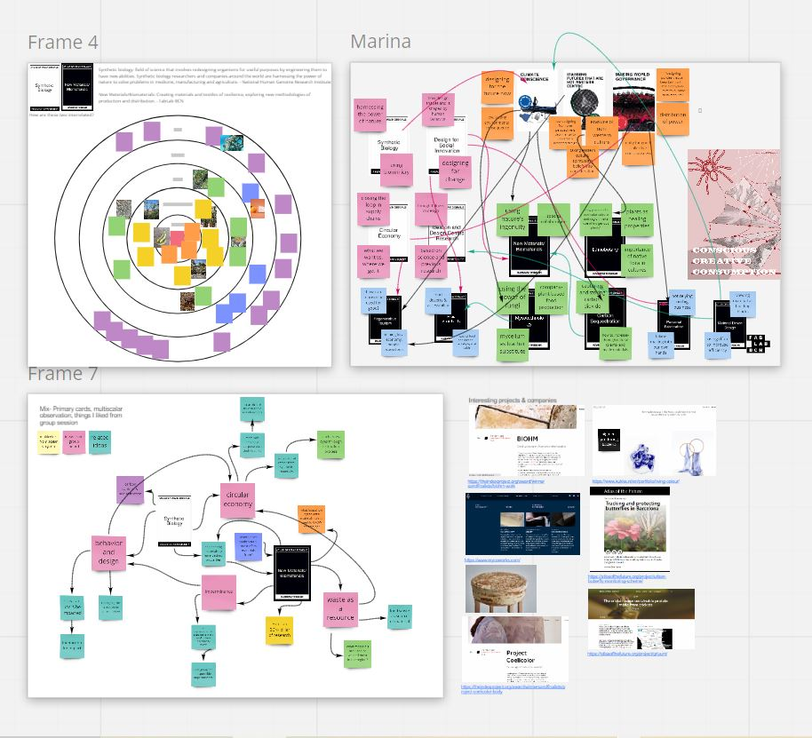
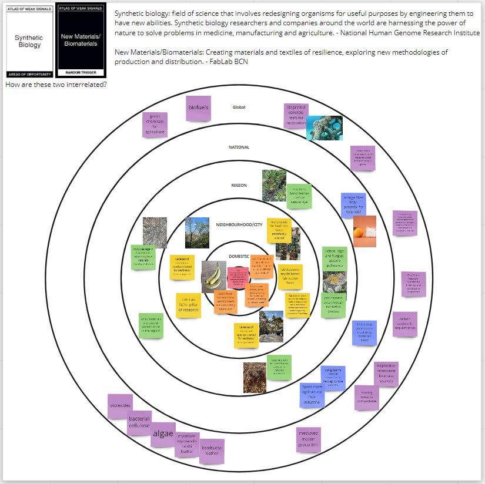
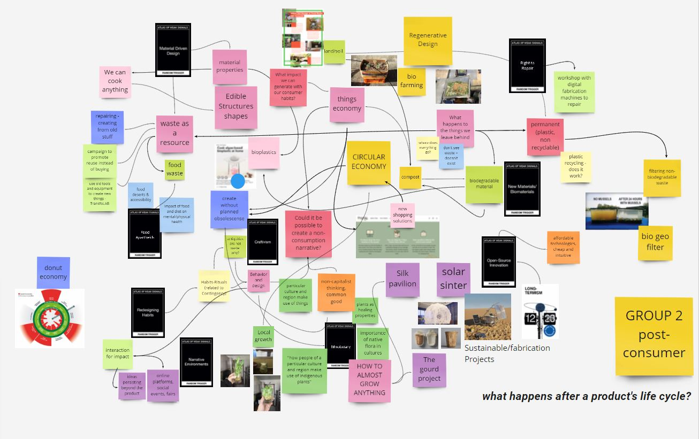

Going into week two, my biggest question was: what does this week’s seminar even mean? Weak signals? Throughout the week, I gained a better understanding of what these signals may be. Weak signals can be defined as indications of an emerging issue, concept, area of interest, or possible change that may be meaningful or may impact our environment in a significant way in the future . Looking at all the “trigger” cards on the Miro board got me thinking about seemingly disjoint, albeit all interesting topics and finding a way to connect them. Making these connections helped me realize that most anything can be connected in some way, and the abstract connections drawn from them create new ideas and ways of thinking that I otherwise would have never come to. Mid week, we got the opportunity to take a hike in Barcelona’s surrounding mountains. It was nice to be able to get in touch with the nearby natural environment outside of the city. The hike reminded me of home, with much of the vegetation similar to California. I enjoyed Mariana’s thought process of taking us there to try to find weak signals in the wild. While on the hike, I found it difficult to make connections but once I started filling out the multiscalar diagram I began to see how my observations could be applied. Getting together in groups of people with similar interests on Friday was super helpful. Using Miro as a collaborative tool for the workspace was really interesting because it allowed for multiple brains to work together, all at once, and see our ideas forming in a giant web.
It was nearly impossible to narrow down the weak signals into a handful, and finally, two final cards. The ones I started with included climate conscious, imagining futures that are not western-centric, and making world governance. My areas of interest included synthetic biology, design for social innovation, circular economy, and ideation and design centric research. Selected random trigger cards were regenerative tourism, food apartheids, personal fabrication, material driven design, new materials/ biomaterials, ethnobotany, mycotechnology, and carbon sequestration. I ultimately chose the weak signals of synthetic biology and new materials/ biomaterials. These resonated with me because as concepts they align with motives I have with my fight and I am also interested in learning more about them and developing them as skills and areas of knowledge this coming year. Synthetic biology relates to ideas of biomimicry I have in the sense that it takes inspiration and uses nature as a basis for research and design of new ideas. I hope to discover the capabilities of biomaterials as a way to decrease waste outputs and find more sustainable solutions to current modes of production in material design and use. Using what nature and biology already offers, in new ways, has potential for improving the way we produce and consume through greater material literacy.
Using the multiscalar diagram as a means to identify weak signals at increasing scales really helped me establish the scope of problems and solutions at varying degrees. It’s often hard to begin tackling large concepts such as these and establishing where to start. By breaking it down into spheres from me to global, I could start small and work my way outwards, making sense of how I can make connections with the topics at greater and greater levels. I found it harder to fill out the regional and national levels than those closer to me or far from a global region. I think it is like this because I do not yet know a lot about what’s going on in Spain or Catalunya since I just moved here. I can make conjectures, but it is something I will only learn with time. In addition, I felt I was limited to the knowledge I already had to fill out the ring, when I myself don’t know too much about synthetic biology or new/biomaterials at a scientific or practical level. I’d like to use this strategy again with other topics when I’m trying to flesh out connections and see how they play a part at different scales.
Using the collaborative design space on Miro was really the first time we got to fully share ideas and collaborate with other classmates, which I was excited about. I’ve never used Miro before, and I think it’s a really useful tool for collaboration that we will all be able to use. In the past, I’ve only shared my work during presentations or smaller groups so this will be new for me. I sometimes feel uncomfortable having my work and ideas out in the open for everyone to see, so I will have to get used to that as a new way of thinking. Forming smaller groups, (I was in the post-consumer group) we could connect with other classmates on areas of interest that we all feel passionate about. It was cool to be in a space with so many like-minded people that have some of the same “fight”. However, it did make me question if we were forming an echo chamber in any way since we all have similar mindsets. The good thing is that we all come from different professional and cultural backgrounds so all have different ideas and specific points of view. We all have interesting things to bring to the table. Working on the miro board at first was a bit confusing to organize, but once we all just started adding things to it it became one big jumble of ideas. There were so many thoughts flying at once and we tried to get it all down on the Miro. I definitely want to spend more time taking a look at it to learn what my classmates are thinking about.
Going through the atlas of weak signals helped better steer me towards which direction I want to head. As Mariana mentioned, I think the plan of the students going out into the field earlier in term on rather than waiting until term 2 or 3 is a good idea because it forces us to start investigating sooner which will lead us where we should be. One person I’d like to contact is Anastasia Pistofido of fab textiles. I think the work and initiatives she is starting are innovative and powerful in a circular economy. Browsing through the instructables website got me excited about the possibility of starting so many at home projects. One thing I'd like to try is to make a bioplastic. It seems like it requires simple ingredients and is pliable so it would be fun to mold it into something like a small decorative bowl or vase. A skill I would like to gain which was derived from the joint Miro activity is how to use waste as a resource. At this point, waste is our most plentiful resource so using it in new materials would be very valuable.